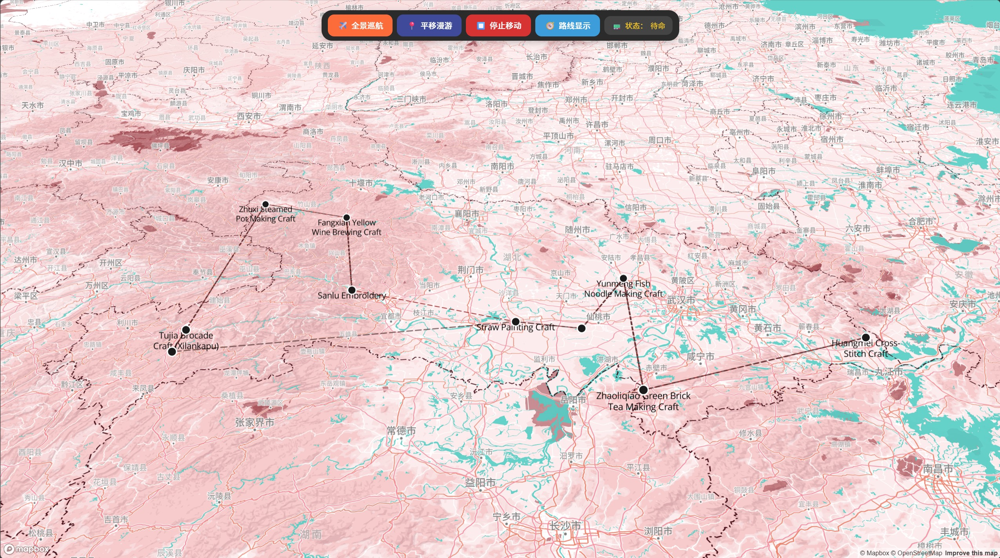
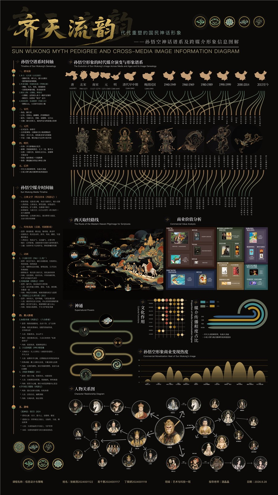
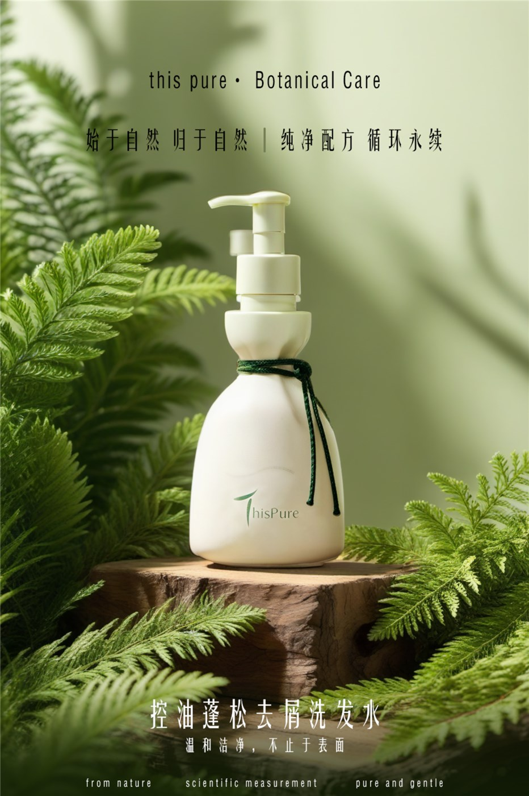
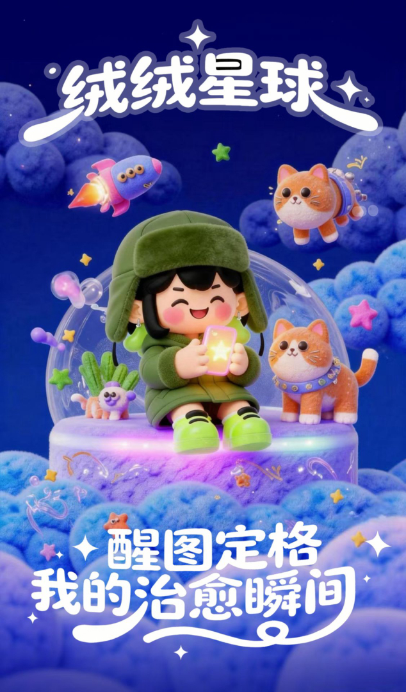
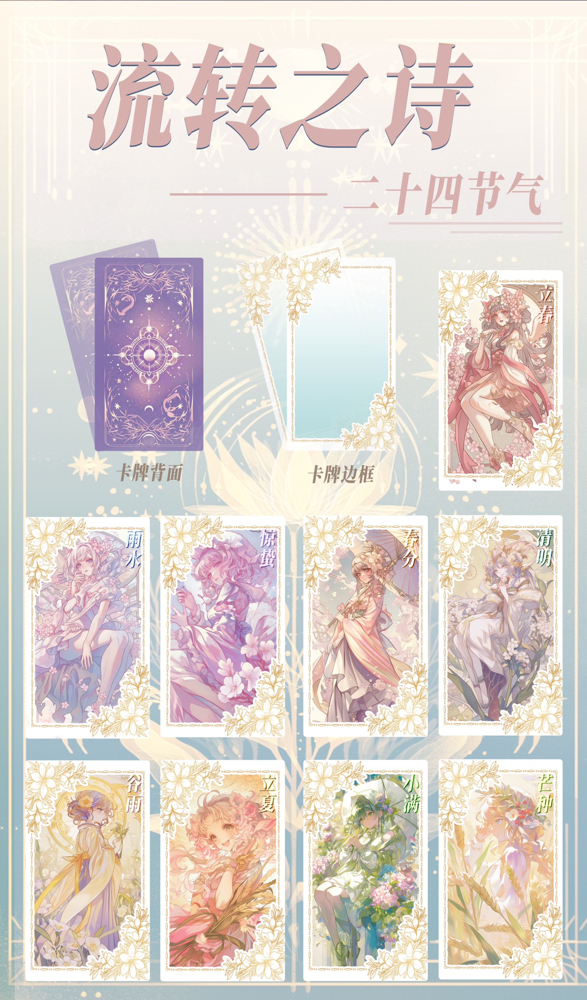
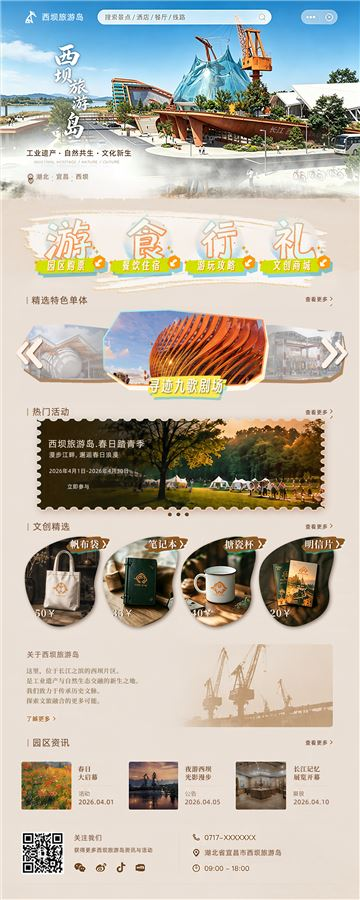

2026 · VISUAL DESIGN / INTERACTION / AIGC
把想法
把想法
画成能看见的故事
视觉设计、交互可视化、AIGC 创作。从一张草图到一张能被记住的画面，我喜欢把过程也留在作品里。
暖色、手绘、一点点叙事感。这一版只定风格，不改原站交互。



SELECTED WORKS · 精选作品
先看图，再看故事
大图优先，卡片像贴在暖色纸上的照片。每张卡片都能回到正式站看完整项目。


THE WAY I WORK · 创作路径
每个作品，都有一条从草图出发的线
用一条手绘虚线串起四个阶段，让浏览过程本身带一点故事感，而不是翻页。
观察
从资料、现场和提问开始，先把问题问对，再决定画面要说什么。
草图
用最快的线条试几种方向，保留偶然出现的好玩细节。
系统
把颜色、字体和网格收成一套能复用的视觉语言。
落地
做成海报、页面或装置，让它在真实场景里替我说话。
WHO I AM · 个人简介
我是易千惠，
我是易千惠，
一个爱把信息画成故事的设计生
湖北美术学院艺术与科技专业本科在读。关注视觉设计、交互可视化与 AIGC 创作，擅长把研究、叙事与视觉语言结合起来，做出有温度、能被记住的作品。